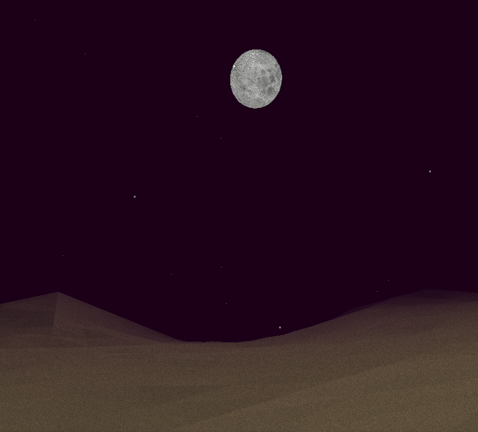
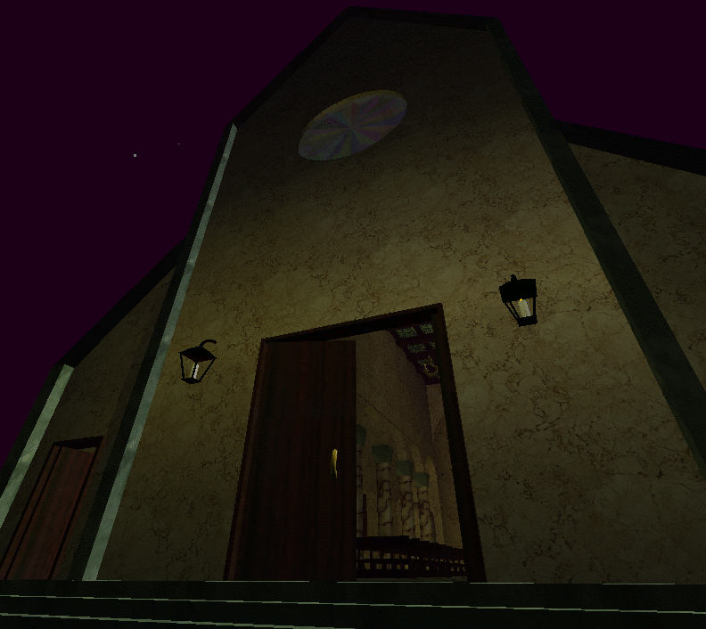
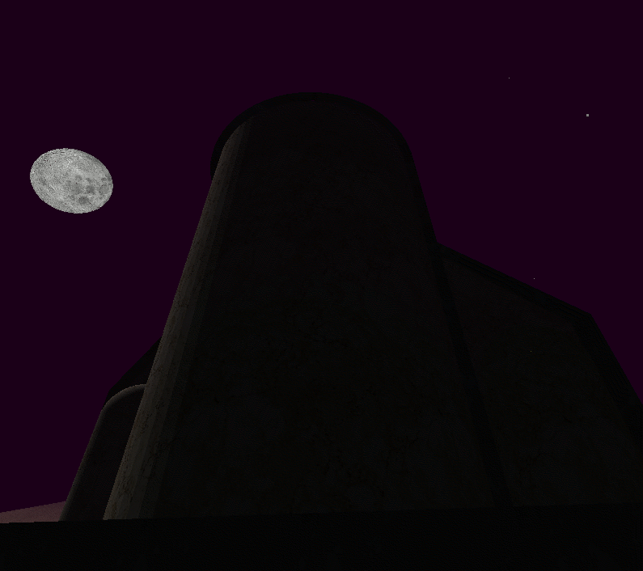
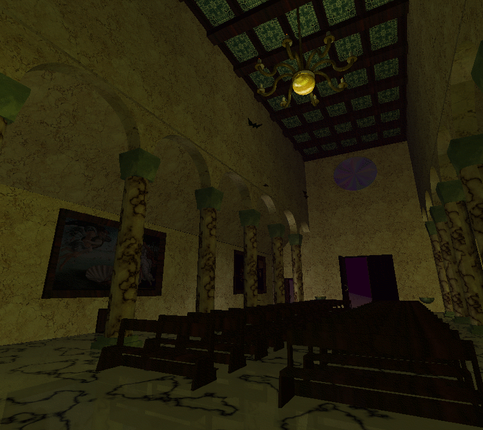
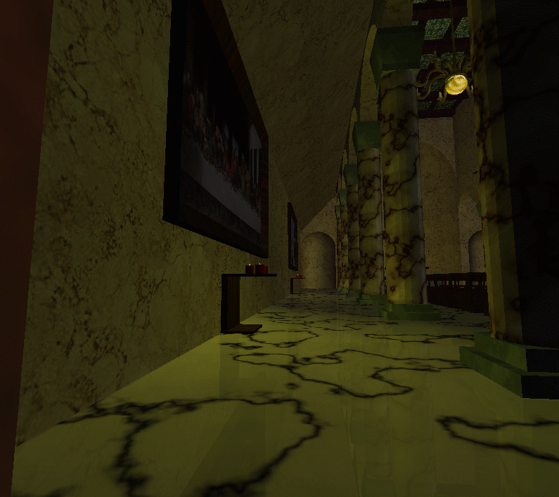
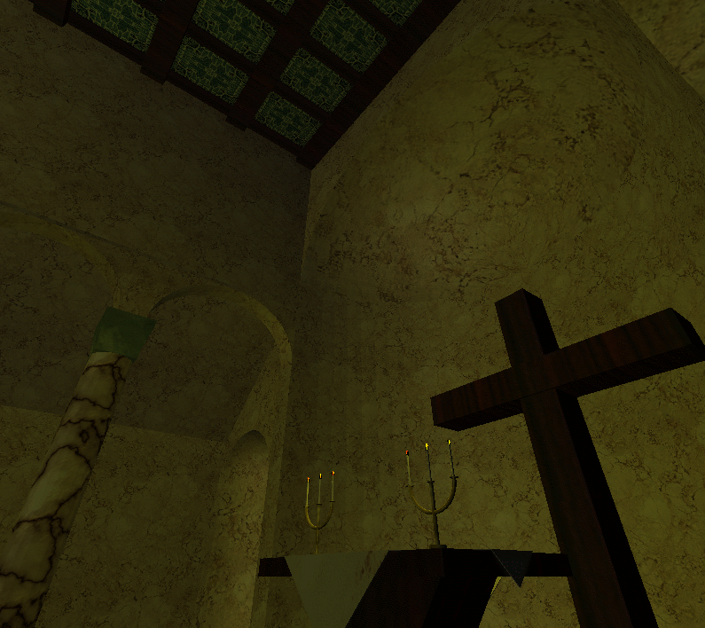

Tesina di Informatica Grafica
Alberto Roscani (matricola 252757)
Claudio Squarcella (matricola 257320)
Nicola Vollono (matricola 256065)
Introduzione
La tesina è consistita nella realizzazione di un ambiente tridimensionale navigabile in prima persona (in stile DOOM), contenente un edificio religioso circondato dal deserto e sovrastato dal cielo notturno.
L'
intero progetto è stato realizzato in OpenGL, senza l'ausilio di strumenti avanzati (eccettuato Gimp per l'editing delle immagini da utilizzare per le textures). Per la realizzazione degli aspetti più avanzati abbiamo coniugato intuizioni personali e spunti tratti dalle dispense del corso e da Internet (di solito senza andare oltre
wikipedia.org...).
Introduzione
L'osservatore si muove nella scena con i tasti A-W-S-D, salta con la barra spaziatrice e si accuccia con C.
A causa della nebbia inizialmente la chiesa non è visibile: bisogna camminare in avanti per raggiungerla.
Le Basi
In una prima fase abbiamo definito due funzioni basilari utilizzate massicciamente nelle fasi successive: verTex() e poliTex() (nel file utils.c).
verTex() prende come parametri le coordinate di 4 vertici consecutivi (insieme a una stringa identificativa, utile nelle sessioni di debug) e genera normali, vertici e coordinate texture richiamando glNormal3f(), glVertex3f() e glTexCoord2f(), a condizione che il poligono individuato sia relativamente semplice (in generale, coppie di vertici appartenenti ad uno stesso piano perpendicolare a uno degli assi cartesiani). La funzione si è rivelata molto comoda soprattutto per la gestione automatica dello scalamento da adottare per le coordinate texture (grazie alla funzione ausiliaria setTextureScaling() che serve a specificare il rapporto numerico tra coordinate mondo e coordinate texture).
poliTex(), appoggiandosi a verTex(), permette di specificare le 6 facce (insieme a normali e coordinate texture) generate dalle otto terne (X,Y,Z) passate come parametri. Anche in questo caso ci sono limitazioni (le due facce passate come parametro devono essere parallele tra loro e perpendicolari allo stesso asse cartesiano) che tuttavia nella maggior parte dei casi non rappresentano ostacoli.
Altre funzioni molto importanti (sempre in utils.c) servono per elementi geometrici di base (sfere, semisfere, quarti di sfera, semitori...).
L'Ambiente: Colline, Cielo e Luna

Il deserto che circonda la chiesa è stato realizzato con una variante semplificata dell'algoritmo diamond square (funzione subdivide() in ambiente.c): in sostanza, il passo ricorsivo consiste nel trovare il centro di un quadrato, assegnare ad esso un'altezza randomica e richiamare il metodo quattro volte con i quadrati generati suddividendo quello originale. La massima variazione di altezza è direttamente proporzionale a pointDistance(centro,terrainCentre) (per impedire di generare dislivelli troppo pronunciati al centro, in corrispondenza della chiesa) e inversamente proporzionale a exp(normalizer-precision) (valore che aumenta esponenzialmente man mano che aumentano le chiamate ricorsive, in modo tale da smussare le variazioni minori).
Il cielo stellato consiste semplicemente in uno sfondo di colore uniforme, con l'aggiunta delle stelle (una serie di punti casuali appartenenti a una calotta sferica che sovrasta la scena: funzione getPointOnSky() di ambiente.c). La luna, infine, è una sfera posizionata sulla stessa calotta.
L'Esterno della Chiesa


Le mura esterne della chiesa sono illuminate dalla luce della luna e dalle torce accese. Per evitare effetti innaturali, abbiamo suddiviso le parti da disegnare in diverse display lists in modo tale da raggruppare tutti gli oggetti illuminati dallo stesso insieme di luci (ad esempio il retro della chiesa viene spezzato in più liste per simulare le parti in ombra rispetto alla luce lunare). L'effetto fiamma si ottiene facendo variare randomicamente intensità e posizione delle luci entro un range contenuto. Il rosone trasparente (grazie al blending) consente di vedere l'interno della chiesa.
L'Interno della Chiesa



L'interno della chiesa è contenuto in un'unica display list, poiché tutti gli oggetti sono illuminati dalle stesse luci. Il numero di luci utilizzate è ovviamente inferiore rispetto al numero totale di candele presenti nella chiesa: in particolare, ad ogni gruppo di candele contigue viene assegnata esattamente una luce (quindi una luce al lampadario, una luce per ogni candelabro, etc).
La riflessione sul pavimento è ottenuta abilitando il blending e ridisegnando gli interni specularmente rispetto all'asse Y. La posizione dei pipistrelli stilizzati viene calcolata con due angoli, uno per la traiettoria curvilinea e uno per il movimento a onda (che influenza anche l'apertura delle ali).
Collision Detection e Posizione dell'Osservatore su Y
I due aspetti più difficili del progetto sono stati affrontati nei modi seguenti.
L'altezza del punto di osservazione dipende dal modo in cui viene generato il terreno (oltre che dalla scalinata per accedere alla chiesa, che ha dimensioni fisse). Per mantenere una rappresentazione del terreno, al momento della creazione generiamo una mappa (terrainHeight) con le altezze di tutti i vertici determinati nei primi 4 livelli di ricorsione: in tal modo i dati da tenere in memoria restano contenuti e l'approssimazione sull'altezza di ogni vertice è accettabile. A questo punto, per calcolare l'altezza di un punto qualunque (funzione getHeight in ambiente.c), si trova il piano individuato dai tre vertici più vicini appartenenti a terrainHeight (mediante risoluzione di un sistema lineare, grazie alle funzioni contenute in sistemilineari.c); l'altezza ignota si calcola sostituendo le due coordinate note nell'equazione del piano.
Anche per quanto riguarda la Collision Detection c'è bisogno di salvare informazioni sull'ambiente creato, in modo da consentire una gestione per quanto possibile semplificata. Assumendo per semplicità che non si possa superare un ostacolo con un salto, la collisionMap può essere rappresentata con due sole dimensioni (X e Z). Pertanto con la funzione addCollisionLine() costruiamo una rappresentazione 2D della chiesa mediante una matrice booleana (realizzata con caratteri per non occupare troppo spazio in memoria!). La gestione della collisione (estremamente semplificata) consiste dunque nel verificare ad ogni aggiornamento della posizione se lo spostamento fa ricadere l'osservatore in una zona invalicabile, permettendo eventualmente lo scorrimento sull'ostacolo (separando le componenti in X e Z del movimento).
Conclusioni
Il progetto ci ha impegnato molto: siamo partiti da zero, abbiamo effettuato numerosi tentativi (alcuni dei quali decisamente fallimentari...) e aggiunto diversi accorgimenti (sicuramente qualcuno ci è sfuggito in questa descrizione...) cercando di ottenere un risultato per quanto possibile realistico e gradevole.
5 maggio 2008